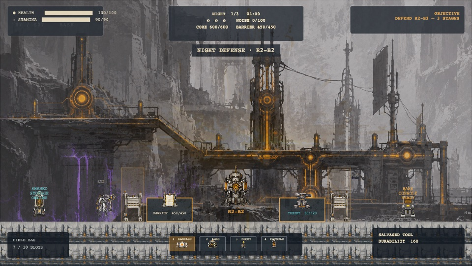
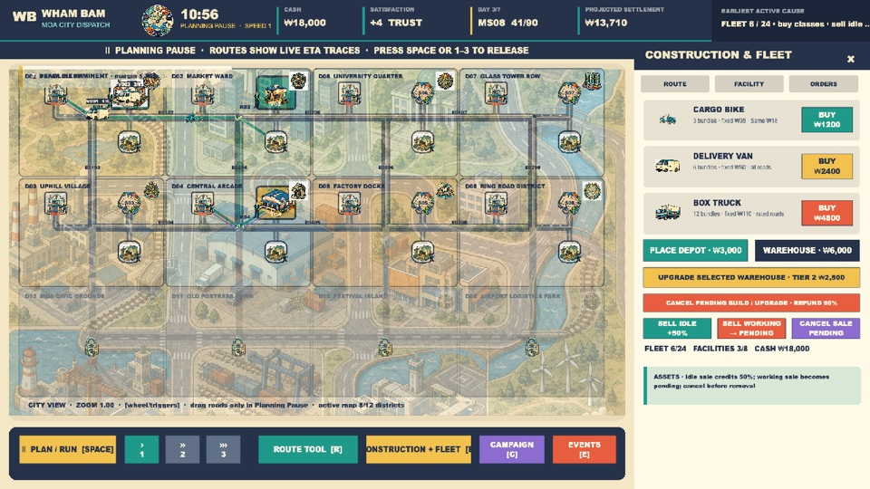
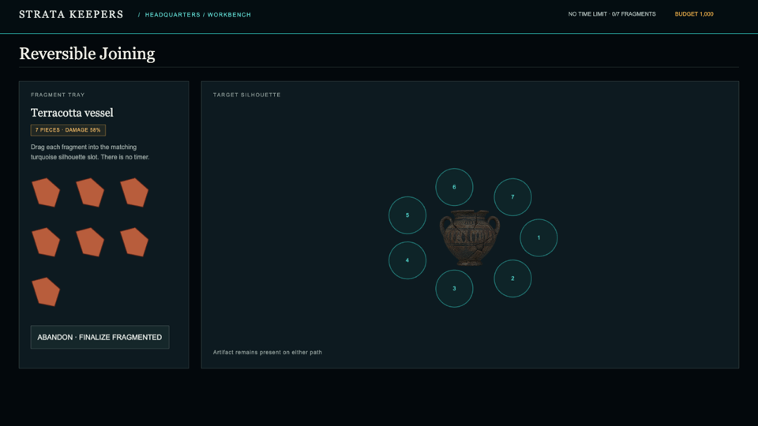
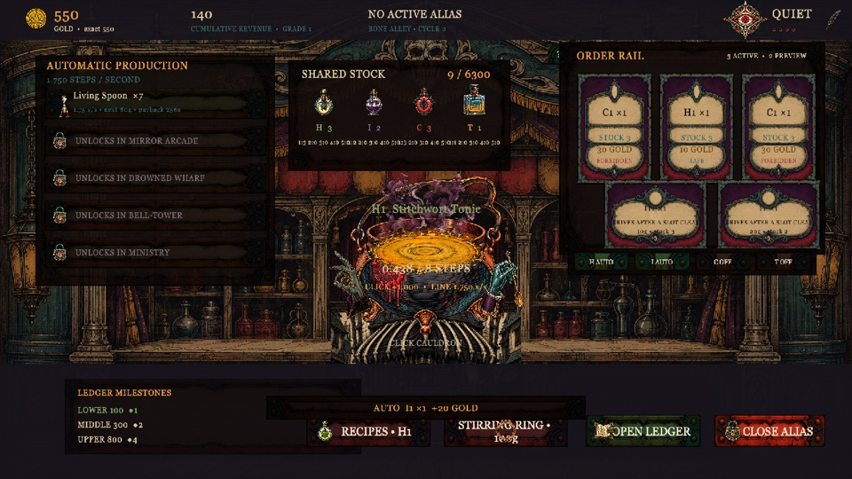
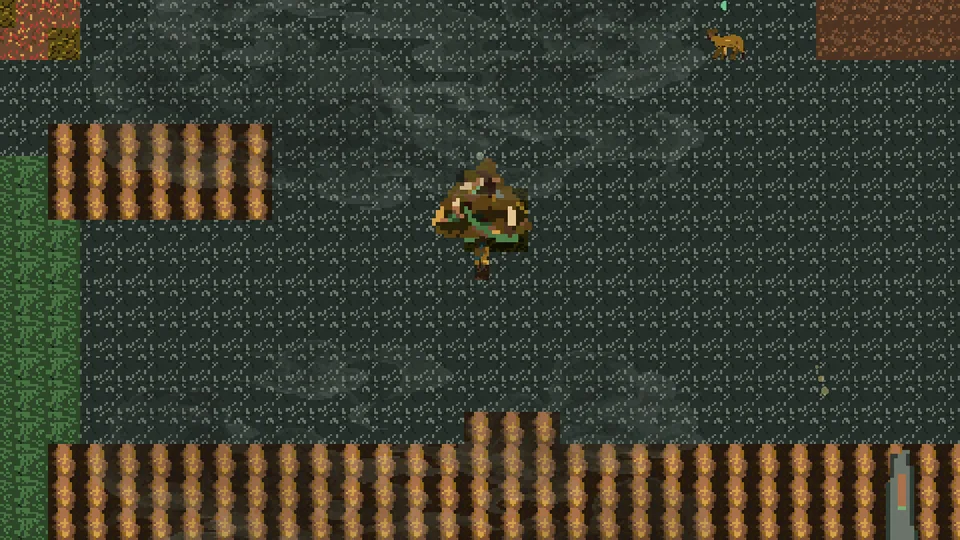
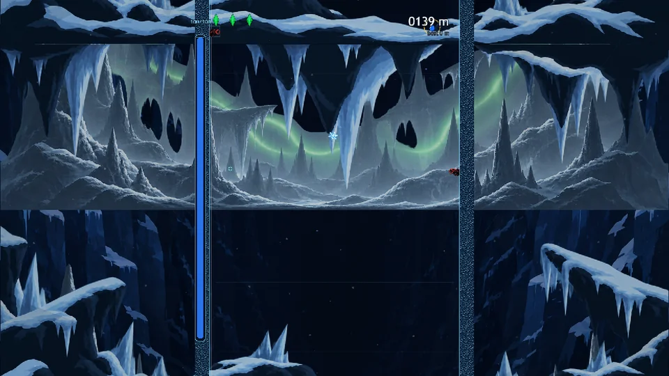
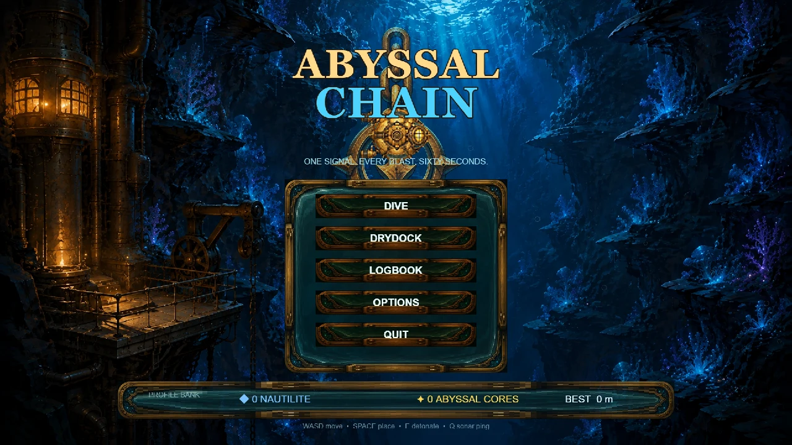

GAME DESIGN DOCUMENT
Cloud Cast

A2Z GameSpec-Bench measures how faithfully coding agents implement
the rules, visuals, and interactions in game design documents.
Coding agents must preserve the designer’s intent
across the rules, visuals, and interactions
of a complete game.
Long-form specifications, with requirements that work together. We measure how faithfully coding agents implement them.
Cloud Cast
Afterglow Network

Wham Bam Logistics

Strata Keepers

Alias Alchemy Shop

SSITGIM

Whispers of the Wild

Bloom or Weed

Snowfall Draw

Abyssal Chain

* Games generated by GPT-5.6-Sol.
Dependency-aware contracts define the requirements. Test policies exercise the game to gather evidence.


A coding agent turns a long-form game design document into a source project and playable build.
Inspect the specified conditions, triggers, and effects. Weight rule scores by their downstream reach.
EVIDENCE Code referencesReplay each shared scenario with its prescribed inputs and timing. Retrieve relevant frames to assess the specified visual responses.
Bots respond to live game states. Normal play and targeted adversarial tests collect evidence across a broader set of requirements.
EVIDENCE Recorded tracesCompare coding agents by overall GDD Fidelity or explore each evaluation axis.
| Rank | Coding agent | GDD Fidelity |
|---|
Results from Table 2. Rankings follow the selected score and game-design split.
≈ All per-axis scores average the reported Small and Big results.
Explore the results and evaluationCoding agents can generate runnable games, yet still struggle to preserve the intended rules and their dependencies.
A2Z GameSpec-Bench evaluates design fidelity across code, visuals, and play, and provides targeted feedback for more faithful game development.
At a glance